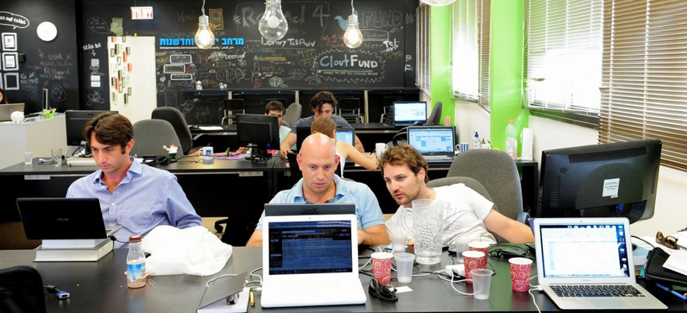

טכנולוגיות למידה
האם מתאים לך ללמוד תואר ראשון בטכנולוגיות למידה?
- יש לך עניין בעולמות ניו-מדיה ותוכן דיגיטאלי, והיית רוצה להפוך את התחביב למקצוע מבוקש.
- יש לך עניין ורקע בהדרכה (מהצבא או מכל מסגרת אחרת) ו/או בעיצוב ממשק ואינטראקטיב.
- יש לך "ראש גדול", רצון לשלב בין כמה עולמות ולהכנס לתחום חדש ומאתגר.
- במידה ובחרת באחת או יותר מהקטגוריות, כדאי לך לשמוע עוד על התואר!
| יש בזה עבודה? | מהו התואר בעצם? | |||
|---|---|---|---|---|
בוגרי התואר עובדים במגוון תחומים:
|
האינטרנט ואתו הרשתות החברתיות, הסמארטפונים, אתרי שיתוף וידאו, מנועי החיפוש - חוללו מהפכה בצורה בה אנשים מתקשרים, משתפים, צורכים מידע, מלמדים ולומדים. התוצאה: דרישה גוברת לבעלי מקצוע המתמחים בעיצוב ופיתוח מולטימדיה ומערכות הדרכה עתירות טכנולוגיות. על מנת לענות לצורך זה הוקם בארץ תואר אקדמי ייחודי: .B.A ב"טכנולוגיות למידה" (טל"מ) שמטרתו להכשיר מקצוענים שישתלבו בארגונים במגזר העסקי והציבורי ויובילו את תחום הלמידה והמידע בעידן הדיגיטאלי. |
|||

|
 | |||
| חברות שעובדות בשיתוף פעולה איתנו | פרטים נוספים | |||
|
נירם גיתן |
NESS |
Eltel |
עסק שווה |
מרכז גיוס לקבע צה"ל |
אלעד מערכות תוכנה |
RT-GROUP
תעשייה אווירית | Edea | גב מערכות | IBM | Experis | JOHN BRYCE | DELL EMC | המוסד | QualiTest |